About

Hello, I'm Lisa,
a UX Designer.
My background is in

Illustration
Data viz
Experience
4 years as Senior Presentation Designer at Statista
Product Design Bootcamp · Digitale Leute School (2026)
Illustration
5 years as a freelance illustrator for children's books & magazines

Motivation
I am driven by
understanding
how people
think, feel and act.

Collaborative and organised
Structured, proactive working style, comfortable in teams.
Focused and persistent
I follow through on what I start and find good paths through challenges.

Fast learner, genuinely curious
I pick up new skills quickly and turn them into creative solutions.
Design Skills
Design Tools
Figma · Adobe CC · Procreate · AI Tools
UX Skills
User Research · Interviews · Wireframing · Prototyping · IA · Visual Storytelling
Soft Skills
Teamwork · Conceptual Thinking · High Learning Agility · Communication
Education
BA Illustration · HAW Hamburg
Product Design Bootcamp · Digitale Leute School (2026)